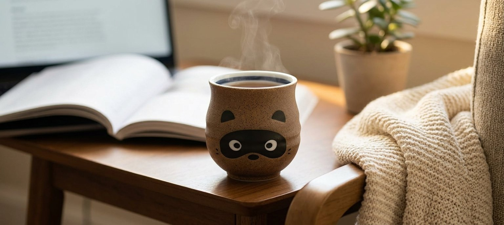
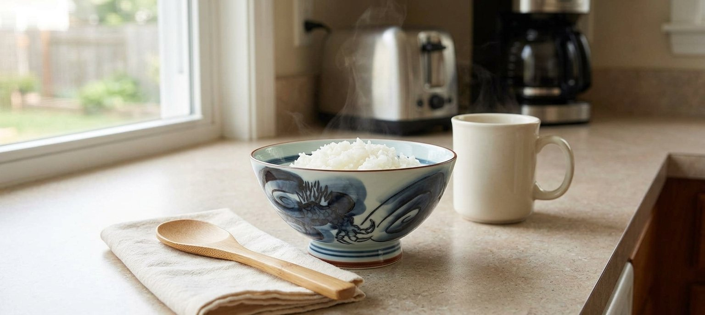
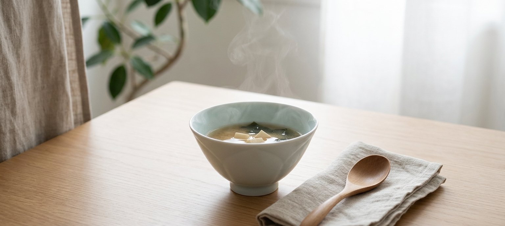
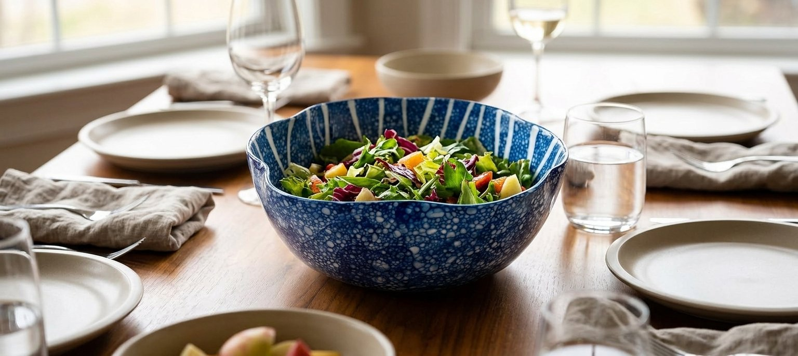

Not one bowl trying to be everything -- four different pieces, each earning its place for a specific, honest reason. One is built for the everyday, two are about how a glaze can change the feeling of a meal, and one is just a little bit of fun. All four are sold today, all four are made in Japan, and none of them need a special occasion to be used.
Hasami-yaki has always been a working person's ware -- unlike Arita or Kutani porcelain, which developed under the patronage of lords and the export trade to Europe, Hasami (Nagasaki Prefecture, founded 1598) grew up supplying ordinary households and river merchants with sturdy, affordable daily tableware. This dragon-pattern bowl continues that: a single large indigo dragon, hand-painted with a jagged mane and coiled claws, wraps the exterior in one bold, uncomplicated motif, with a thin persimmon-red rim line. At $16.99 it's priced like a bowl you actually use, not one you save for guests -- and reviewers report exactly that, from morning rice to a kid's bowl of ice cream.

As an Amazon Associate, I earn from qualifying purchases.
Seihakuji (literally "blue-white porcelain") traces back to the qingbai wares of Song-dynasty China, brought to Japan in the Muromachi period and prized by the ruling class and Zen temples before becoming a domestic Japanese style in its own right. The color isn't painted on -- it's a clear glaze with trace amounts of iron that turns pale icy blue-green wherever it pools thickest, so the deepest color naturally collects in the center well of the bowl, exactly where the last spoonful of soup sits. This one, from Arita's Fujimaki kiln, is shaped like a six-petaled flower (rinka). It's a newer release with no reviews yet on Amazon -- we're including it for the glaze technique itself, not a proven track record, so weigh that before buying.

As an Amazon Associate, I earn from qualifying purchases.
Yuteki ("oil spot") glaze forms through a firing reaction that isn't fully controlled by the potter -- mineral-rich glaze breaks into small bubble-like spots as it cools, so the exact density and placement varies bowl to bowl. This one pairs that exterior texture with midare tokusa ("scattered horsetail reed") lines radiating across the interior in irregular, unevenly-spaced bands -- "midare" specifically means the spacing is deliberately not uniform. At 8.3 inches wide it's sized to be the centerpiece of a table, not a side dish. Like the seihakuji bowl above, this is a newer listing with no reviews yet -- the case for it is the glazework itself, which you can evaluate from the photos.

As an Amazon Associate, I earn from qualifying purchases.
This one isn't trying to be a serious piece of craft -- it's a stoneware tea cup shaped like a tanuki (raccoon dog), a folklore figure known in Japan as a trickster and, in a more modern reading, a symbol of good fortune. The seller doesn't specify a named kiln or region for this particular cup, so we're not attaching a deeper regional story to it -- it earns its place on this list a different way, with 4.9 stars across 27 reviews and buyers describing it as the mug they reach for daily, not a novelty that sits in a cabinet. Stock has run low before, so if the face catches your eye, don't wait too long to decide.
As an Amazon Associate, I earn from qualifying purchases.
None of these four is meant to replace the others -- the dragon bowl won't make your morning miso feel like a ritual, and the seihakuji bowl isn't the one you hand a kid for ice cream. What they share is that each earns its place through something specific and real: a low price built for daily use, a glaze that changes color where it pools, a firing pattern no one fully controls, or just a face that makes you smile before coffee. That's what actually changes when a piece like this enters a kitchen -- not one dramatic transformation, but four small, different ones.
This page contains affiliate links -- if you buy through one, it costs you nothing extra and helps support this site. The seihakuji and yuteki bowls above are newer listings with no Amazon reviews yet at time of writing; that's noted honestly above rather than implied otherwise. The historical and technique claims reflect commonly cited references on Hasami-yaki, seihakuji, and Arita ware, not manufacturer marketing claims specific to any one product.